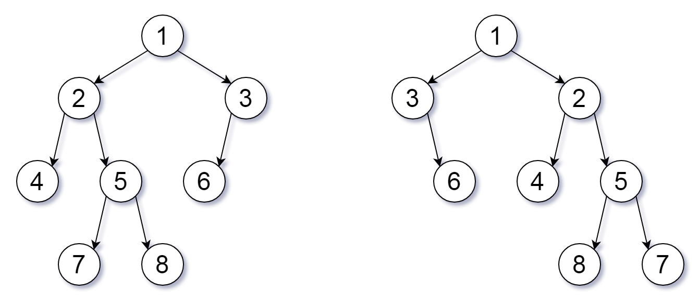

951. 翻转等价二叉树
两棵树同步递归：根值相等后，孩子「不翻能对上」或「翻当前结点交叉对上」任一成立即可。
思路
- 递归比较一对结点：都空返回 true；一空一非空或值不等返回 false。
- 孩子配对有两种方式：
左对左且右对右（当前结点不翻），或左对右且右对左（翻当前结点），任一成立即可，短路求值。 - 翻转可以作用在任意结点上，所以每个结点独立决策，不需要真的翻转树。
图解
最优解
1class Solution {2 public boolean flipEquiv(TreeNode root1, TreeNode root2) {3 if (root1 == root2) return true; // 两边都是 null（或同一结点）4 if (root1 == null || root2 == null || root1.val != root2.val) return false;5 // 各自孩子对得上（不翻），或者交叉对得上（翻这一个结点）6 return (flipEquiv(root1.left, root2.left) && flipEquiv(root1.right, root2.right))7 || (flipEquiv(root1.left, root2.right) && flipEquiv(root1.right, root2.left));8 }9}题目
我们可以为二叉树 T 定义一个 翻转操作 ，如下所示：选择任意节点，然后交换它的左子树和右子树。
只要经过一定次数的翻转操作后，能使 X 等于 Y，我们就称二叉树 X 翻转 等价 于二叉树 Y。
这些树由根节点 root1 和 root2 给出。如果两个二叉树是翻转 等价 的树，则返回 true ，否则返回 false 。
示例 1：

输入：root1 = [1,2,3,4,5,6,null,null,null,7,8], root2 = [1,3,2,null,6,4,5,null,null,null,null,8,7] 输出：true 解释：我们翻转值为 1，3 以及 5 的三个节点。
示例 2:
输入: root1 = [], root2 = [] 输出: true
示例 3:
输入: root1 = [], root2 = [1] 输出: false
提示：
- 每棵树节点数在
[0, 100]范围内 - 每棵树中的每个值都是唯一的、在
[0, 99]范围内的整数
题面取自力扣当前版本。
数据快照 2026-11-04。题面版权归力扣所有，本站点仅供本人学习使用，请勿对外发布。